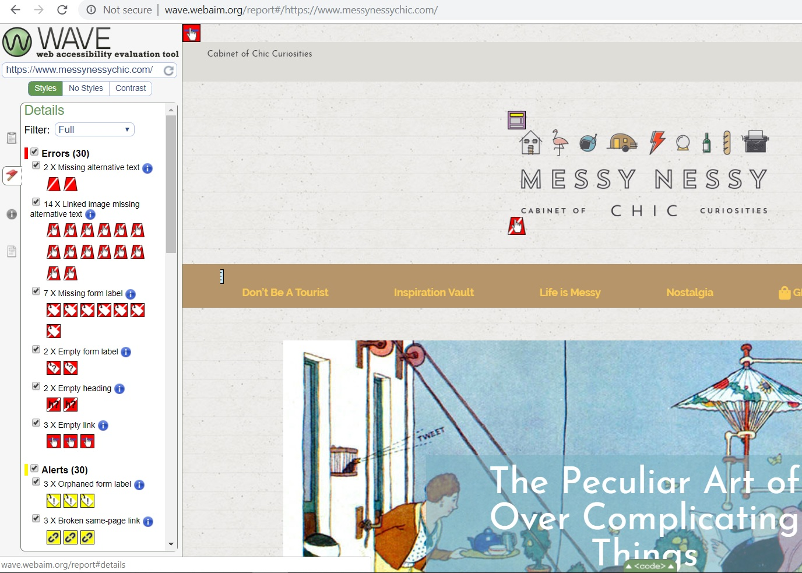
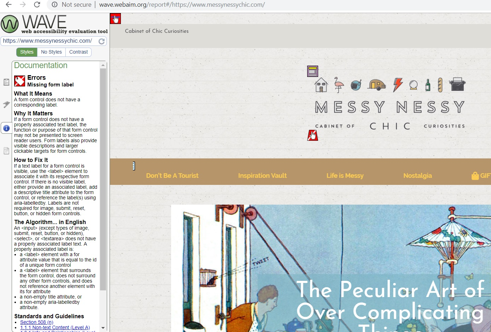
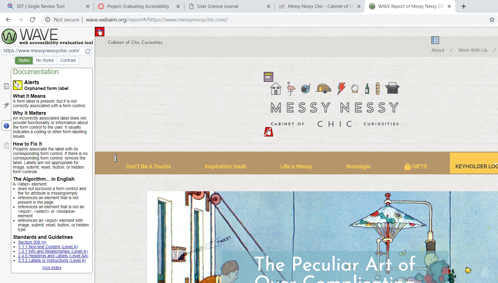

Outside the digital screen we have learned to design architecture, learning materials like books and different mediums to accommodate the needs of others with disabilities and difficulties the majority of people may not have to deal with. The digital world is fairly new and learning to navigate design and innovate new ideas for technology users can be difficult in thinking outside the box. Many programmers and designers can be lazy and decide to stick with standards. Other companies like Apple have upped the bar and allowed themselves to get creative in coming up with ideas to reach outside the norm and invite in those who struggle with technology based access.
For this accessibility test I chose a blog site I visit frequently called Messy Nessy (https://www.messynessychic.com). This blog is fairly popular and designed nicely with plenty of followers on its social media accounts as well. Is it a site known for finding curiosities and historical quirky information on the web such as forgotten painters or oddities around the world. I will be using WAVE access tool online to look over the site (https://wave.webaim.org/).
Access Test
All I had to do to run the test was copy and paste the link to site into WAVE’s search tool. Once I did that a total of 30 errors and 30 alerts was detected by WAVE and this information came out on the left hand side bar.
Checking the errors it showed a few missing alternative texts and 7 missing form labels which shows that these parts of the site do not show larger clickable targets for form controls. Missing links to images was also presented 14 times saying that without these links, the site visitor has no reference to where this information is coming from. No headings was also a problem that has come up a lot. Lack of headings can lead to confusion for many users and derail the reading not knowing what topic they going into.
Orphaned labels was one alert I found interesting. Three were found within the site and WAVE indicates that the reason these are alerts is because there could be a problem with the coding meaning the labeling is a not associated with or providing functionality with the corresponding form control.
Thoughts
It seems that the accessibility issues were mainly due to managing references and linking items that may have an extension to other sites and information. I can definitely see how this can be an issue with a site that points out historical stories and oddities especially since it is information that isn’t easy to find. I was expecting there to be more issues since it is a standard blog. Seeing this I notice that there is a long way to go when it comes to correcting accessibility not only for those with disabilities, but with programmers correcting code in general when it comes to giving out the correct information.